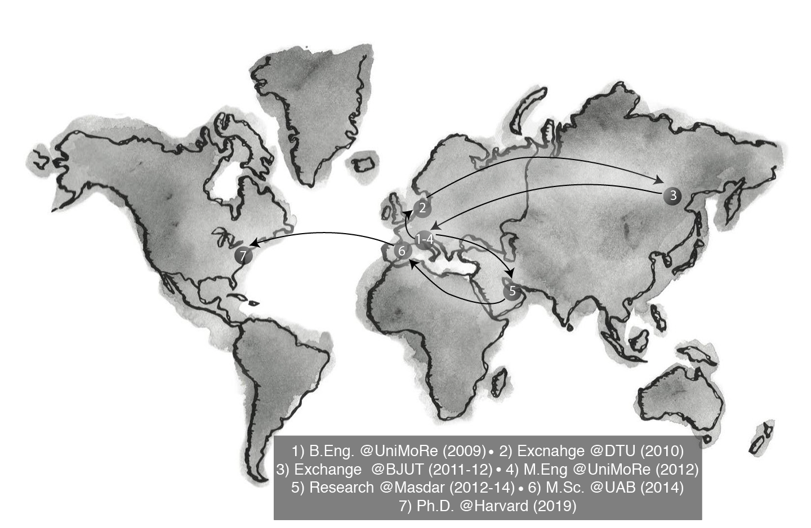

The path that led to Harvard University was widening: I had studied in five different countries on 3 continents. Yet, here I am now, at Harvard John A. Paulson School of Engineering and Applied Sciences carrying out a Ph.D. in Environmental Engineering under the supervision of Prof. Chad Vecitis and Elsie Sunderland. My research focus is on the development of new nanomaterials to be used in water treatment applications.

I hold a B.Eng. in Environmental Engineering (2009) and an M.Eng. in Sustainable Engineering (2012), both awarded from the University of Modena and Reggio Emilia. My engineering background mainly focuses on the sustainable use of resources. During my master’s degree in environmental engineering, I researched sustainable buildings in Denmark and solar energy in China. My deep passion for sustainability then led me to the middle of the Arabian desert: Masdar. At Masdar, which is the first attempt at building a zero-energy city, I collaborated with passionate researchers investigating ways to improve self-cleaning coatings of solar panels via the analysis of their nanostructure. Collaborations with professors and researchers at the Autonoma University of Barcelona afforded me the opportunity to spend circa 9 months in Spain and also earn an M.Sc. in Nanotechnology and Materials Science (2014).
I have a deep interest and passion for the environment. In particular, I am interested in the water/energy nexus, a multifaceted challenge requiring expertise from different fields, for two main reasons;
i) clean access to water and sanitation is recognized by the UN as a major goal to ensure prosperity for all in a sustainable manner.
ii) Energy production represents the largest source of greenhouse gasses. In the water/energy nexus, carbon sequestration technologies could play a pivotal role and I believe, that we will witness to exciting technological advances in this space.
The passion for the environment pervades all aspects of my life, thus I tend to be a really outdoorsy person who likes to challenge his body with environmental forces: I have run marathons and I'm an Ironman finisher. I mainly enjoy trail running and being up in the mountain trying to spread the "sustainability" message.